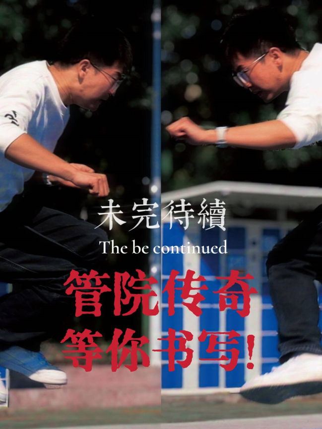
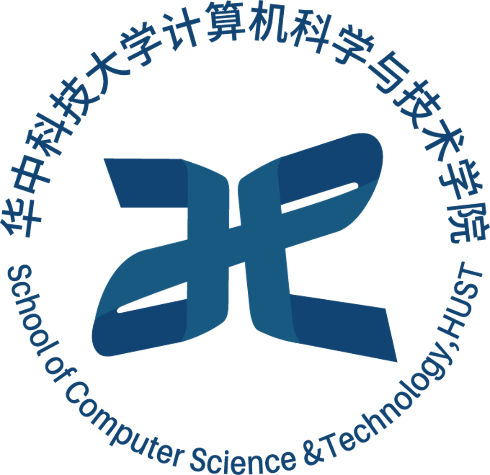

管理学院——企业领袖的摇篮，管理大师的殿堂
华中科技大学管理学院创建于1979年，经历了由最初的工程经济系、管理工程系、经济管理学院、工商管理学院到管理学院的发展历程。学院现有“管理科学与工程”、“工商管理”等2个一级学科博士学位授权点，其中“管理科学与工程”一级学科为国家级重点培育学科，设有博士后科研流动站。你科管理学院，被称为“企业领袖的摇篮，管理大师的殿堂”。在此之下，我们有可爱迷人的宋导、强大负责的团委组织部，以及各位在特团活动中久经沙场、身经百战的学长学姐。在其之下的工商管理类2403班更是群英荟萃，乐观向上。著名管理学大师廖建桥曾在课堂上提到（吹牛）：“管理就是管你！” 也许我们管不了星辰大海，但在特团活动中，我们能管你、理你、懂你......
光学与电子信息学院（School of Optical and Electronic Information）是2012年由原电子科学与技术系和光电子科学与工程学院合并成立的学院，现拥有4个本科专业（光电信息科学与工程、电子科学与技术、集成电路设计与集成系统、微电子科学与工程），8个硕士点（微电子学与固体电子学、半导体芯片系统设计与工艺、材料物理与化学、电力电子与电力传动、电子信息材料与元器件、光学工程、物理电子学、光电信息工程），7个博士点（微电子学与固体电子学、材料物理与化学、半导体芯片系统设计与工艺、电子信息材料与元器件、光学工程、物理电子学、光电信息工程）以及2个一级学科博士后流动站（电子科学与技术、光学工程），已形成包括本科、硕士、博士、博士后完整的人才培养体系。学院现有两个国家级重点学科，一级学科“光学工程”和二级学科“微电子学与固体电子学”。

华中科技大学计算机科学与技术学院成立于1997年，其前身是原华中理工大学（即华中工学院）的计算机科学与工程系（成立于1973年），专业建设最早可追溯到1960年夏学校成立的电子计算机专业教研室。经过五十余年的建设和发展，已成为我国计算机科学与技术领域人才培养和科学研究的重要基地，是入选教育部“双一流”重点建设学科之一。学院具有计算机科学与技术一级学科博士学位授予权，下设计算机系统结构、计算机软件与理论、计算机应用技术和信息安全四个二级学科，其中，计算机系统结构为国家重点学科、湖北省高校特色学科。